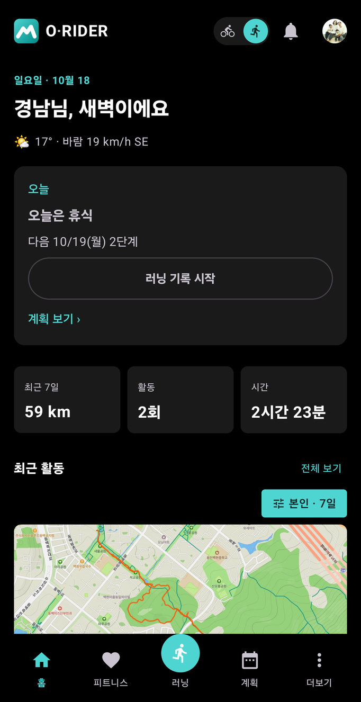

1. 설치와 첫 실행
이 장에서 할 수 있는 것
- 앱을 설치하고 기록에 필요한 권한을 허용합니다.
- Google 계정으로 로그인해 기록을 클라우드에 백업합니다.
- 홈 화면에서 오늘 할 운동과 최근 기록을 읽습니다.
따라 하기: 설치와 권한
- App Store 또는 Google Play에서 O-Rider를 설치합니다.
- 앱을 열면 권한을 차례로 묻습니다. 아래 표를 보고 허용하세요.
- 위치 권한은 “항상 허용”(백그라운드 위치)까지 허용해야 화면이 꺼져도 기록이 이어집니다.
| 권한 | 쓰는 곳 | 허용하지 않으면 |
|---|
| 위치 (정확한 위치) | GPS 거리·경로 기록, 지도 | GPS 거리·경로를 기록할 수 없습니다. 준비 화면 GPS 줄에 “위치 권한이 필요합니다”가 나옵니다. |
| 위치 — 항상 허용 | 화면이 꺼진 상태의 기록 | 화면이 꺼지면 기록이 멈출 수 있습니다. |
| 블루투스 (근처 기기) | 심박·속도·파워 센서, 변속기, 레이더, 액션캠 | 센서를 연결할 수 없습니다. GPS 기록은 됩니다. |
| 알림 | 기록 중 상태 알림, 친구·그룹 알림 | 기록 중 알림과 소셜 알림이 보이지 않습니다. |
| Android 신체 활동 | 러닝 걸음 케이던스(spm) | 러닝 케이던스가 비어 있습니다. |
iOS iPhone도 위치·블루투스·알림 권한을 묻습니다. Apple 건강(헬스 연동)은 연결할 때 따로 동의를 받습니다(
9장).
따라 하기: 로그인
- 더보기 > 설정을 엽니다.
- 맨 위 계정 카드에서 Google로 로그인을 누르고 계정을 고릅니다.
- 로그인되면 카드에 “Google 계정 연결됨”이 표시됩니다.
iOS iPhone에서는 Apple로 로그인도 고를 수 있습니다. 다만 웹(orider.co.kr)은 Google 계정 로그인만 지원하므로, 웹에서도 기록을 보려면 Google로 로그인하세요. 로그인하지 않고(게스트로) 쓴 기록은 웹에서 볼 수 없습니다.
로그인 후에는 설정 > 계정에서 이름·이메일, 친구 코드, 위치 공유, 활동 기본 공개범위, Strava 연결을 관리합니다(10장).
화면 읽는 법: 홈

홈 — 오른쪽 위 종목 토글(자전거 / 러닝)에서 지금 고른 종목이 밝게 표시됩니다.
| 위치 | 보이는 것 | 누르면 |
|---|
| 맨 위 오른쪽 | 종목 토글, 알림(종 아이콘), 프로필 사진 | 종목 전환 / 알림 목록 / 계정 |
| 인사말 아래 | 현재 위치의 기온·바람 | — |
| 오늘 카드 | 계획에 잡힌 오늘 운동(없으면 “오늘은 휴식”), 다음 운동 날짜, 기록 시작 버튼, 계획 보기 › | 기록 준비 화면 / 계획 탭 |
| 최근 7일 | 거리 · 활동 횟수 · 시간 합계 | — |
| 최근 활동 | 지도와 함께 최근 기록 목록, 필터 칩(예: “본인 · 7일”) | 전체 보기 → 주행 기록 목록 / 항목 → 활동 상세 |
오늘 카드의 버튼은 종목에 따라 “러닝 기록 시작”처럼 바뀝니다. 버튼을 눌러도 바로 기록되지 않고
준비 화면이 먼저 열립니다(
2장).
자주 막히는 점
위치 권한을 “앱 사용 중에만”으로 두면 주머니에 넣고 달리거나 화면이 꺼졌을 때 기록이 끊길 수 있습니다. 휴대폰 설정 > 애플리케이션 > O-Rider > 권한 > 위치에서 항상 허용으로 바꿔 주세요.
홈의 최근 활동이 비어 있으면 아직 저장된 기록이 없거나, 필터 칩이 좁은 기간·대상으로 설정된 경우입니다.